Digital Twin and ReLEAF's System
A digital model represents a physical system but is updated by hand. A digital shadow receives live data automatically, but changes back to the system still need a person. A digital twin closes the loop: data flows automatically from the system to the model and back [1, 2]. In the field of biomanufacturing, a digital twin can not only help monitor live data, it also acts as a second simulated world that runs the exact same work as the physical world, but ahead, giving the users risk assessments and action suggestions before things actually happen.
Our bioreactor is meant to run for weeks beside farmland, far from laboratories where results can be analyzed precisely. Because no one will always be there to take samples or interpret every reading, we developed a digital twin that can monitor live readings from sensors and weather forecasts, acts as the decision-making “brain” of the system, and allow user to loop back the result to predict more accurate projections and risks. The next version adds an Ask tab, so that a farmer with no expertise in biomanufacturing can ask what the reactor is doing in plain language and act on the answer.
What our digital twin measures
Within the bioreactor
| Channel | Instrument | Purpose | Provenance |
|---|---|---|---|
| Optical density 600 nm | Photometer: amber LED, 2 mm flow cuvette, sample and reference lux sensors | Biomass | in-line |
| pH | Arduino pH probe | Growth and secretion conditions; alarm | in-line |
| Pressure × 4 | Pressure transducers | Lumen ΔP, trans-membrane pressure (TMP), fouling | in-line |
| Flow rate | Turbine flow meter | Cross-flow, wall shear, hydraulic model (R4) | in-line |
| Pinch valve | Servo | Lumen isolation | commanded |
| Luer valves × 4 | Valves on the loop | Routing between reservoir, module and permeate | commanded |
| Lumen ΔP, TMP, fouling ratio | Pressure and flow through the hydraulic model | Membrane state; when to clean | indirect |
| Green light | Tested separately, but not integrated yet | Induces the CcaS/CcaR strain to make protectant | tested, not integrated |
| Dissolved oxygen | Had trouble calibrating our DO sensor | Measure DO | experimented, not integrated |
Outside the reactor
| Channel | Instrument or source | Purpose | Provenance |
|---|---|---|---|
| Leaf temperature | Leaf sensor | Leaf minus air temperature as a water-stress signal | bench tested |
| Leaf wetness | The same leaf sensor | Biotic stress detection | planned |
| Weather forecast | Weather service | Temperature, humidity, rain, wind, evapotranspiration | external |
| Air temperature and humidity | Air sensor | Vapour pressure deficit; the reference for the leaf sensor | bench tested |
ReLEAF is an AIoT system: the sensors and valves above are wired to a board that logs every reading, and models learn from those readings. An autoencoder our team trained on the healthy first 120 hours of the 434-hour run flagged a failing photometer 26.7 hours before its reading became unusable (R2). The models have so far run on recorded data after each run, and a person still makes every decision. The next Digital Twin joins them to the live loop and adds the Ask tab, where a farmer with no expertise in biomanufacturing can ask about the reactor in plain language and act on the answer.
Results
Every run so far
| Run | Set-up | OD600 | What it gave |
|---|---|---|---|
| 1 · 6 June prototype 260606 | B. subtilis 168 WT. PES hollow fibre, lumen about 200 mL; 300 mL LB plus 20 mL overnight culture; peristaltic pump at 94 mL/min; no stirring | Hand samples to 27 h: reactor 0.17 to 0.37, flask to 2.46 | Stopped by a pump leak. 2 mL of shell-side liquid grew no colonies. Next: BPT tubing, stirring, sampling at the reservoir |
| 2 · 14 June prototype 260614 | B. subtilis 168 WT. Run 1 plus stirring at 200 rpm and a sampler before the pump; 37 °C; 300 mL as in run 1 | Samples every 15–20 min to 7.1 h: reactor 0.90 by 145 min, flask 0.83 by 278 min | Stirred reactor plateaued about two hours before the flask. Next: 22 °C |
| 3 · 21 July to 8 August | B. subtilis 168 WT at 22 °C, 300 mL, hollow fibre module fitted, in-line photometer | 434 h continuous, peak about 1.5 | The sensor alarm (R2) |
| 4 · 1 to 6 September | B. subtilis 168 with constitutive ACC deaminase secretion, in the incubator, full-length hollow fibre module; 1 L | Two files: 3.2 h from near zero to 0.24; 10.2 h unlogged; then 102 h from 0.84 to 3.77 | The forecast comparison (R5), on the second file; the Dry Lab Notebook's 53 hours are its first part |
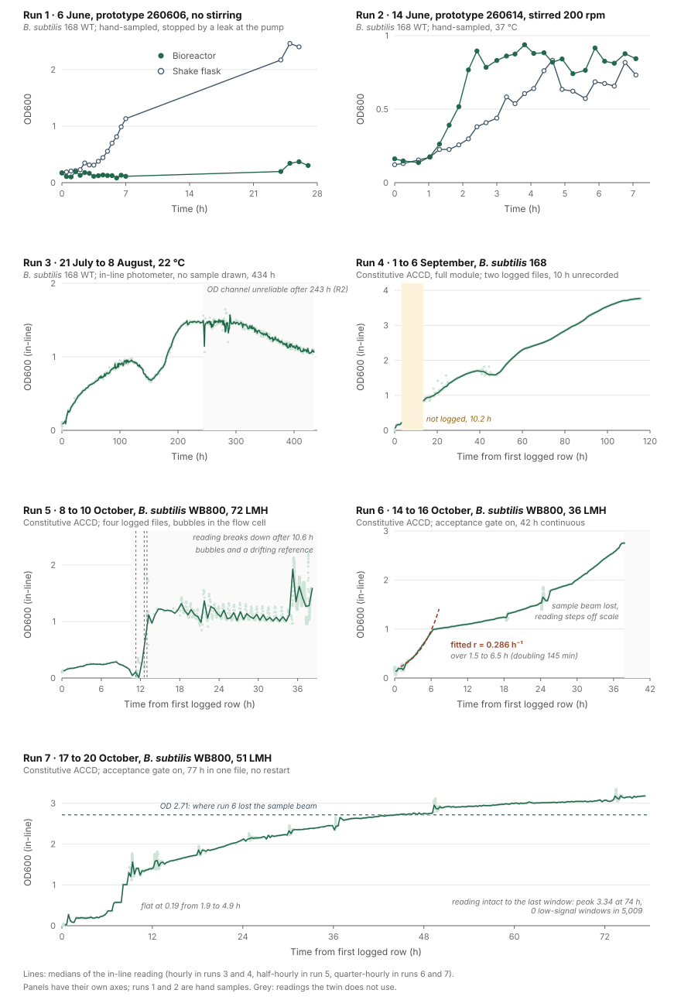
Photometer calibration against TiO₂ and SiO₂
TiO₂, 23 August
On 23 August 2026, cumulative TiO₂ additions into a stirred 400 mL loop gave 45 paired points between the in-line photometer and the BioDrop spectrophotometer (Figure 2). Up to an optical density of 1.2 the photometer follows the BioDrop with slope 1.018 and R² 0.995.
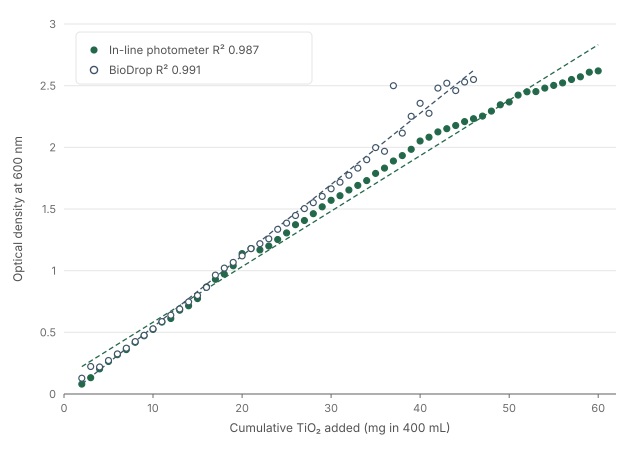
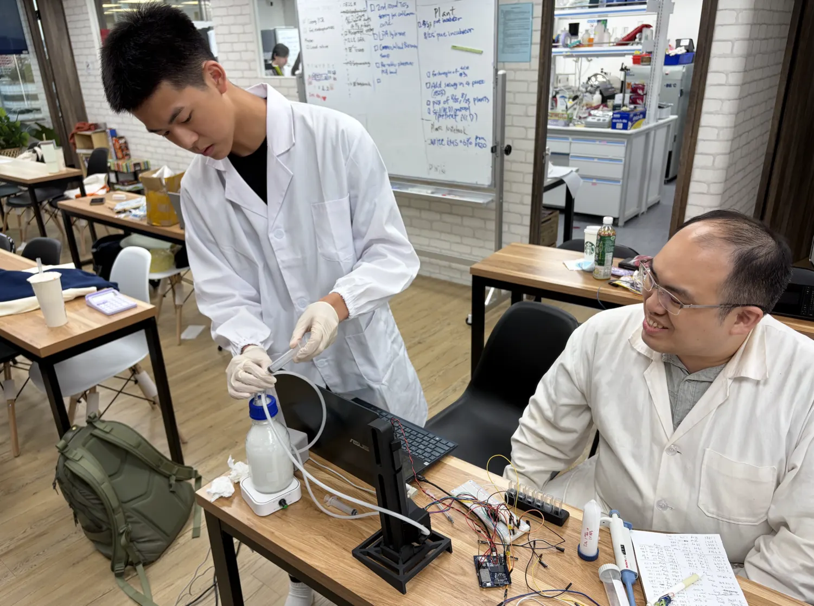
SiO₂, 10 October
On 10 October 2026 the same loop ran the calibration iGEM's protocol actually asks for: silica in 2.5 mg steps from 2.5 to 100 mg in 500 mL of 1% SDS, read at every step on the BioDrop and on both photometer builds, and logged in-line every five seconds for 4 h 27 min (Figure 4).
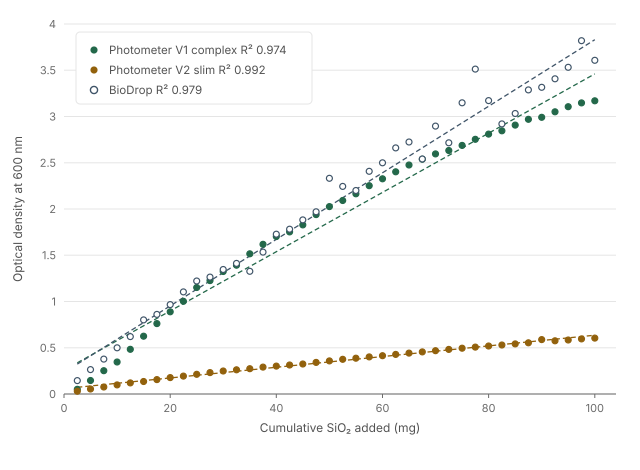
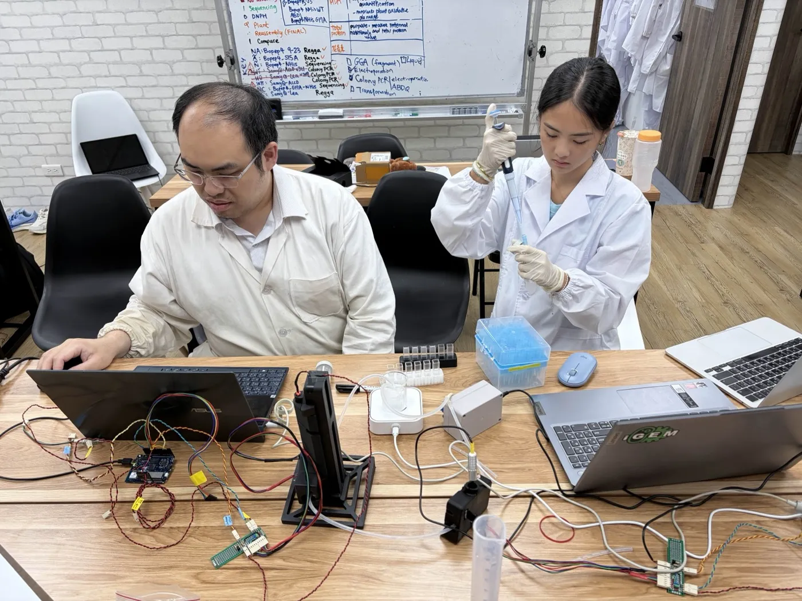
The run carries its own check. At 137.6 min the suspension was diluted and then restored, which tests proportionality without the dose being known: 2.3610 before (SD 0.0033, 29 readings), 0.7943 after (SD 0.0017, 38), and 2.3665 restored (SD 0.0157, 16). The ratio across the dilution is 2.97 one way and 2.98 the other, and the restored reading returns within 0.2% of the original. A reading of 2.36 therefore carries the same proportional meaning as one of 0.79, which is the property a calibration needs for the twin to compare one reading against another.
The 434-hour run
21 July to 8 August 2026: 434 hours of wild-type B. subtilis 168 at 22 °C with the hollow fibre module fitted, 2,671 valid rows of 2,720 logged, no sample drawn. Two axes are scored separately: a sensor axis on the reference beam, which never passes through the culture, and a process axis on the specific growth rate.
| Window | What happened | Sensor axis alarms | Process axis alarms | Interpretation |
|---|---|---|---|---|
| 120–160 h | OD falls 0.93 to 0.72; reference normal | 0% | 73% | Process event |
| 220–240 h | Reference steps 26.67 to 25.83 lux; OD still clean | 100% | 0% | Photometer drifting while OD still looks fine |
| 240–434 h | Reference collapses; OD scatter 5 to 10× higher | 100% | 35–36% | Photometer and OD both unreliable |
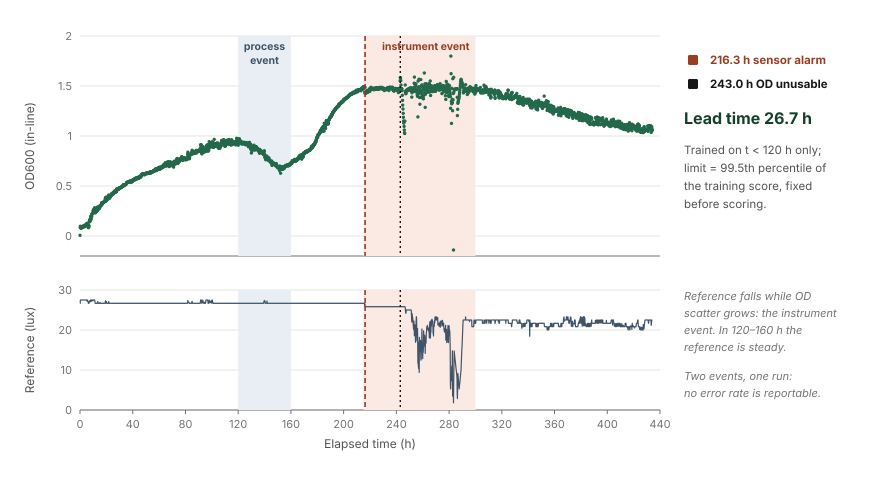
The trust layer flagged the sensor at 216.3 h, 26.7 h before the OD channel failed completely at 243.0 h: enough time for a controller to drop the faulty feed.
The leaf and air sensors on the bench
On 10 October 2026 the field sensor rig was tested at three sites with stable air temperature: an incubator at 22 °C, a room at 26 °C and a stairwell at 26.4 °C. The rig is an ESP32 reading two sensors: an SHT31 for air temperature and humidity, and an SN-3001-YM-N01 for leaf temperature and leaf wetness over RS485. Both sensors were held in air beside each other, with no leaf. Each site had three five-minute runs logged every five seconds, giving 540 paired readings.
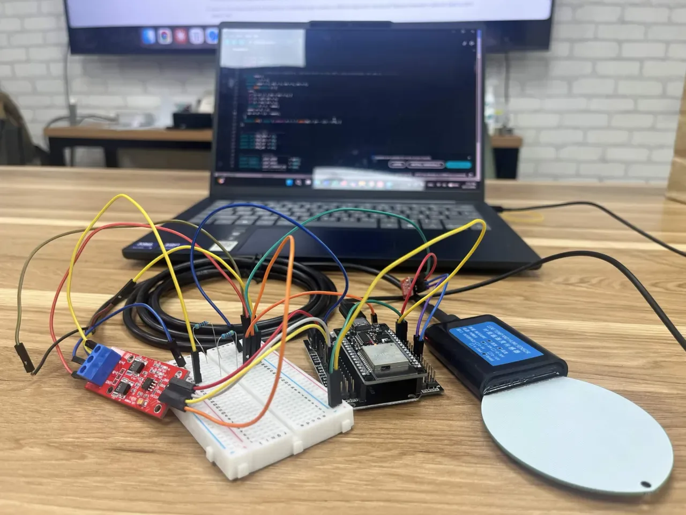

The SHT31 matched the nominal temperature of each site. Sharing the same air, the two sensors should agree, yet the leaf sensor read 1.2 to 1.9 °C warmer once settled, and the size of that gap changed from site to site, so one fixed offset will not correct it.
| Site | Air temperature | Air humidity | Leaf − air, site mean | By run |
|---|---|---|---|---|
| Incubator, 22 °C | 21.81 to 22.64 °C | 34.7 to 36.2% | +1.71 ± 0.20 °C | +1.76, +1.50, +1.86 |
| Stairwell, 26.4 °C | 26.20 to 26.81 °C | 55.8 to 61.9% | +1.31 ± 0.19 °C | +1.52, +1.22, +1.20 |
| Room, 26 °C | 25.52 to 26.20 °C | 58.9 to 62.0% | +0.47 ± 0.46 °C | −0.09, +0.54, +0.97 |
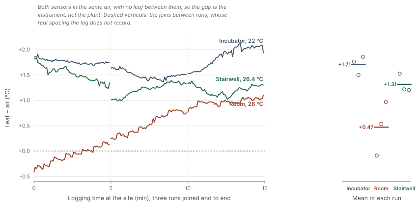
Leaf wetness read 0.0% in every sample. The sensor was never wetted, so this test cannot yet show whether the channel responds.
In the field the leaf sensor will be on a plant and the two readings are expected to differ: the leaf minus air temperature difference is one of the signals of water stress. A bias of 1.2 to 1.9 °C is large enough to hide that signal or invent one, so it has to be measured and removed before the twin acts on it.
Module pressure drop
On 16 August 2026 we pumped water at 22 °C through the reactor at eight pump speeds and measured the pressure lost along the way, once with the hollow fibre module in place and once with a plain tube where the module sits (Figure 10). At 263 mL/min, the flow we run at, the module loses 0.096 bar, 1.03 times what the textbook formula predicts for 11 open fibres, so none are blocked. At that flow the force of the liquid on the fibre walls, calculated once from the pressure sensors and once from the flow meter, agrees to 2.8%, so each sensor can check the other.
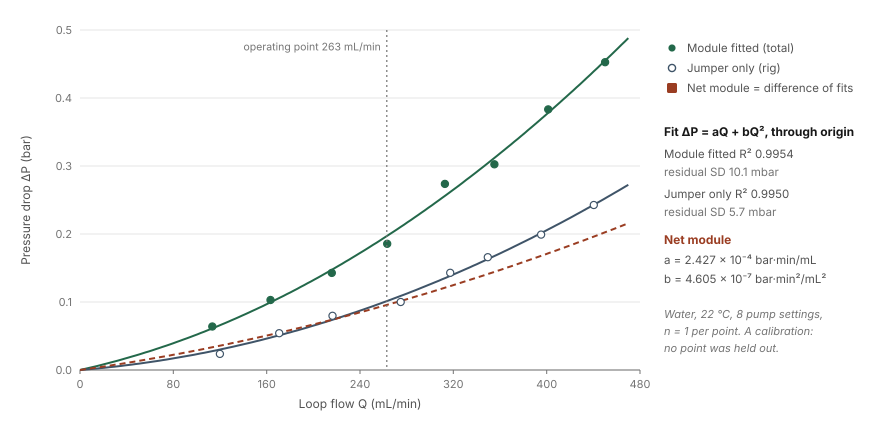
Batch forecasting
We ran 102 hours of perfusion, 2 to 6 September 2026, with B. subtilis 168 secreting ACC deaminase constitutively; OD600 rose from 0.84 to 3.77. We compared Kalman filter, local linear, global linear and exponential forecasts against persistence, which predicts no change. A forecast was made every hour from 12 h, each using only data up to that point.
| Horizon | Persistence RMSE | Kalman RMSE | Improvement |
|---|---|---|---|
| 2 h | 0.067 | 0.040 | 41% |
| 4 h | 0.132 | 0.083 | 38% |
| 8 h | 0.256 | 0.192 | 25% |
| 12 h | 0.373 | 0.310 | 17% |
Most of the run is above the linear limit. The 12-hour median OD rose from 1.06 to 3.75, so R5 forecasts the photometer reading, not biomass. The model comparison still holds, because every model forecasts the same signal.
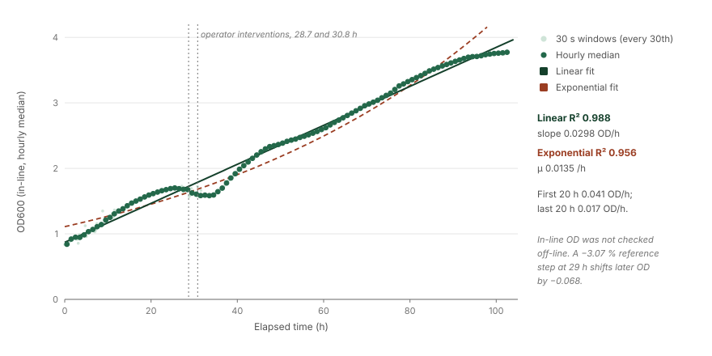
Global linear weighs early data as much as recent data, so it points the wrong way when growth changes speed. Exponential assumes growth keeps accelerating, which it does not over 102 hours of perfusion, so it overshoots. Local linear follows the recent level and slope; the Kalman filter also weighs each reading against the noise, so it follows real changes without chasing scatter.
Light plate
On 19 September 2026, B. subtilis WB800 grew in light-programmable array wells under six light arms, read on a plate reader at five time points to 24 h. A logistic model beat logistic-with-lag by AICc and fits at NRMSE 1.9% (R² 0.997), against the 15% criterion for bioprocess models [3]: \(r = 0.299 \pm 0.017\;\mathrm{h^{-1}}\) (doubling time 139 min), \(K = 1.005\), \(X_0 = 0.0235\).
To test the fit as a prior, we left out each arm in turn, fitted the other five, and predicted its 24 h OD from its first 8 hours, with and without the prior.
| Arm | Observed OD at 24 h | With the prior | Without the prior |
|---|---|---|---|
| R1 weak red | 0.967 | 0.972 | 0.306 |
| R2 medium red | 0.910 | 0.973 | 0.296 |
| R3 high red | 0.967 | 0.969 | 0.355 |
| G1 weak green | 1.014 | 0.958 | 0.666 |
| G2 medium green | 0.975 | 0.977 | 0.695 |
| G3 high green | 0.958 | 0.986 | 0.502 |
With the prior the error was at most 7%; without it, 29 to 68%, from the same eight hours.
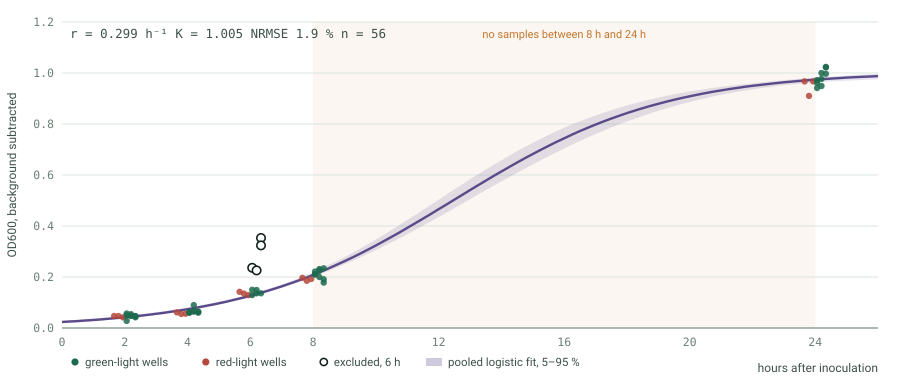
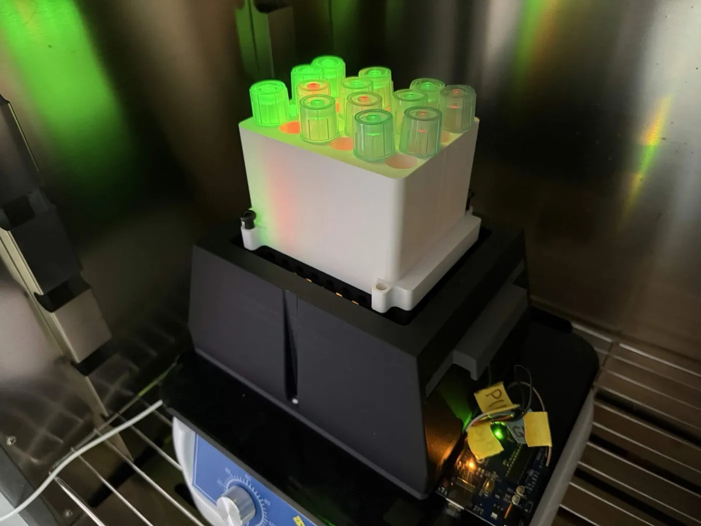
The Software
The Digital Twin
It has three parts. Firmware v3.10.9 (sketch/sketch.ino) runs on the Uno Q's microcontroller, reads the instruments and holds every interlock. Backend v4.12 (python/main.py) runs on the board's Linux side, computes derived values and alarms, writes the log to the board's disk and serves the page on port 7000. Interface v4.13 (assets/index.html) is one file in the browser, which displays and commands and protects nothing. The firmware pushes readings to the backend and the backend calls the firmware for commands, over the board's Bridge link.
The next Digital Twin
The digital twin we ran in experiments has not integrated leaf wetness data and weather forecast predictions into the green light trigger decision, due to time constraints. We did develop this new digital twin for future testing that has six tabs: what to do now, a live dashboard, the growth twin against its forecast band, weather and blast risk, the batch record, and setup. And a self learning function that allows users to record every run's results and data for more precise future predictions.
In the Ask tab, the farmer users can paste an API key from their own AI provider (Claude, ChatGPT or Gemini) and can then ask about the screen in plain language, such as whether the reactor is fine or why the green light is still off. With each question the assistant receives the readings, warnings and advice on screen. It can explain them and cannot move a valve or the light. The key stays in the browser tab and is not saved. On the iGEM wiki the chat is switched off, because the wiki allows no request to an outside server.
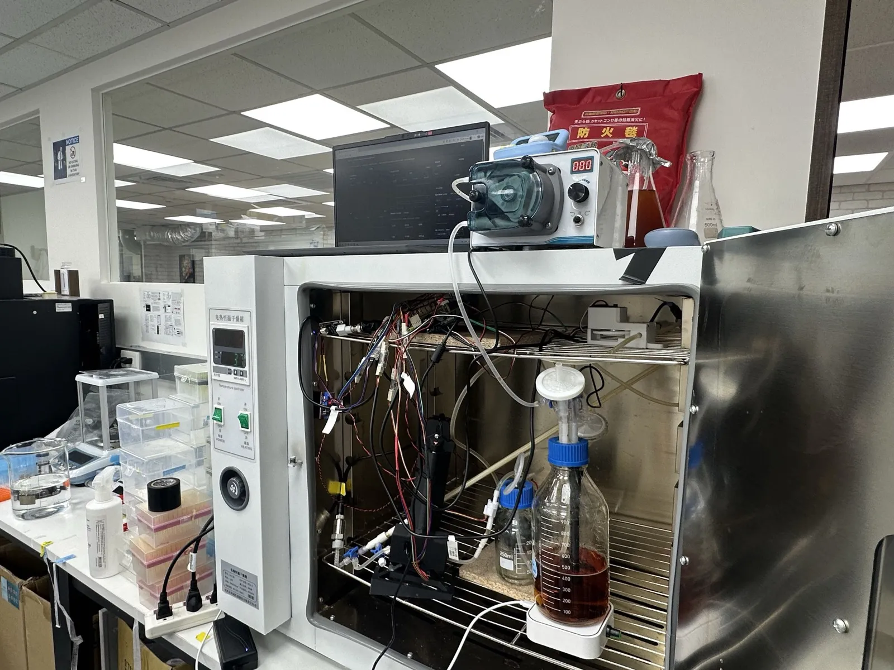
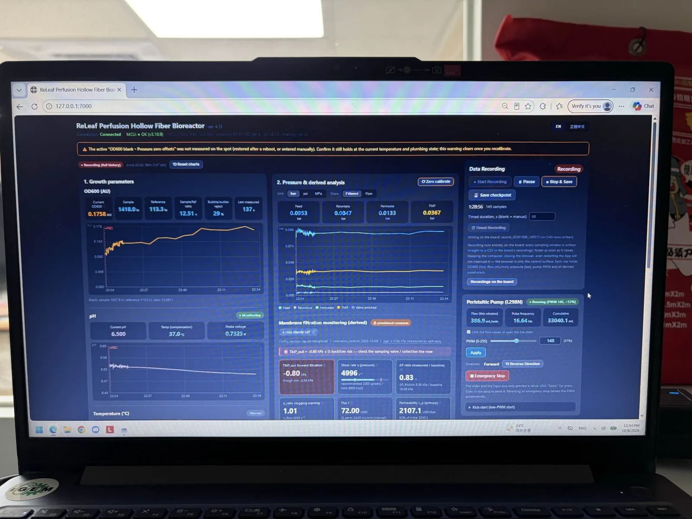
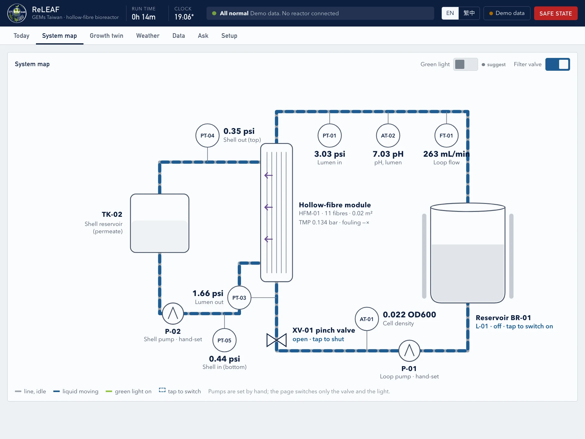
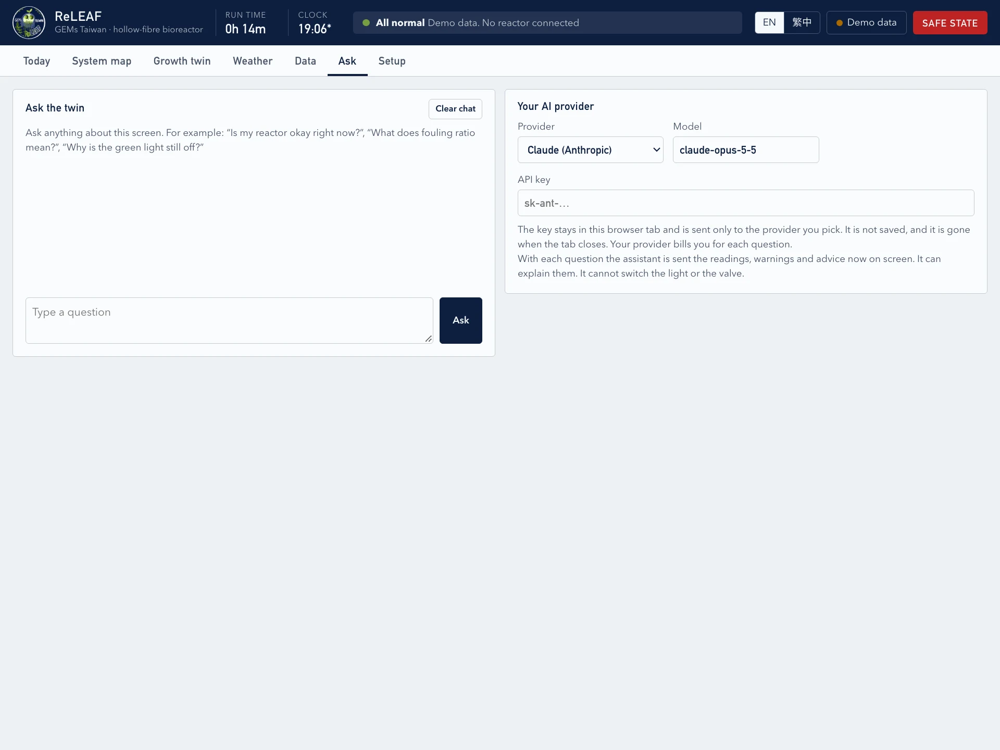
Current limits
Four things are not yet in the twin. Loop temperature: the probe is fitted but has not been answering, so the runs used a temperature typed in by the operator. Dissolved oxygen: we had trouble calibrating the sensor and neither probe can be autoclaved, so it is not on the reactor. Green light on the reactor: induction was tested on the light-programmable array and is not built into the reactor, so the twin cannot yet switch it on. Induction light in the culture: it is not measured, and a dense culture will dim it by an amount nothing on the reactor reads.
References
- Portela, R. M. C., Varsakelis, C., Richelle, A., Giannelos, N., Pence, J., Dessoy, S., & von Stosch, M. (2021). When is an in silico representation a digital twin? A biopharmaceutical industry approach to the digital twin concept. Advances in Biochemical Engineering/Biotechnology 176, 35–56. doi:10.1007/10_2020_138
- Gargalo, C. L., Caño de las Heras, S., Jones, M. N., Udugama, I., Mansouri, S. S., Krühne, U., & Gernaey, K. V. (2021). Towards the development of digital twins for the bio-manufacturing industry. Advances in Biochemical Engineering/Biotechnology 176, 1–34. doi:10.1007/10_2020_142
- Sinner, P., Daume, S., Herwig, C., & Kager, J. (2021). Usage of digital twins along a typical process development cycle. Advances in Biochemical Engineering/Biotechnology 176, 71–96. doi:10.1007/10_2020_149
Licence
Both programs, the Digital Twin and the next Digital Twin, are released under the MIT licence. The text is in software/LICENSE, beside the Digital Twin's source in software/rig-app/. The wiki's own text and figures stay under CC BY 4.0.